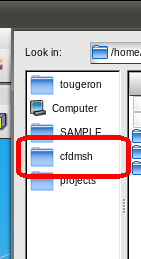

Content of this section:

 cfdmsh 4.0 documentation
cfdmsh 4.0 documentation cfdmsh 4.0 documentation


The first thing to do to use cfdmsh is of course to "install" it, even if "install" is not always a suitable world for this tool.
There are two ways to proceed, depending on the type of installation of Salome itself and the way the user wants to load the cfdmsh library in Salome.

If Salome was installed using the Install Wizard, it is possible to put the cfdmsh.py file into a certain Salome folder so as to be able to import it as any other python library from the Python console of Salome or in a Salome Python script.
To do so, just copy the cfdmsh.py file into the following folder, replacing the X characters by the suitable version numbers:
<salome folder>/KERNEL_<X.X.X>/lib/python<X.X>/site-package/salome/
Example: /apl/salome/salome_7.7.1/KERNEL_7.7.1/lib/python2.7/site-packages/salome/
Once done, the user should be able to open a Salome study and to type in the Python Console:
import cfdmsh
If this command fails, the user should use the second method.
The second way to install cfdmsh on your computer is to simply put somewhere the cfdmsh.py file (and to remember where) so as to be able to load it from the GUI using File > Load Script or [Ctrl]+[T].
To access it quickly, the cfdmsh folder can be added to favorite ones from the preferences of Salome, going to: File > Preferences... > SALOME > Directories.

cfdmsh 4.0 documentation
tougeron-cfd.com © 2016